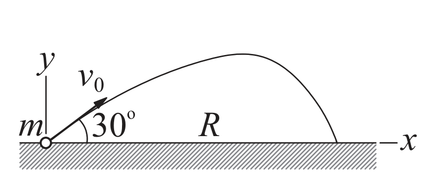
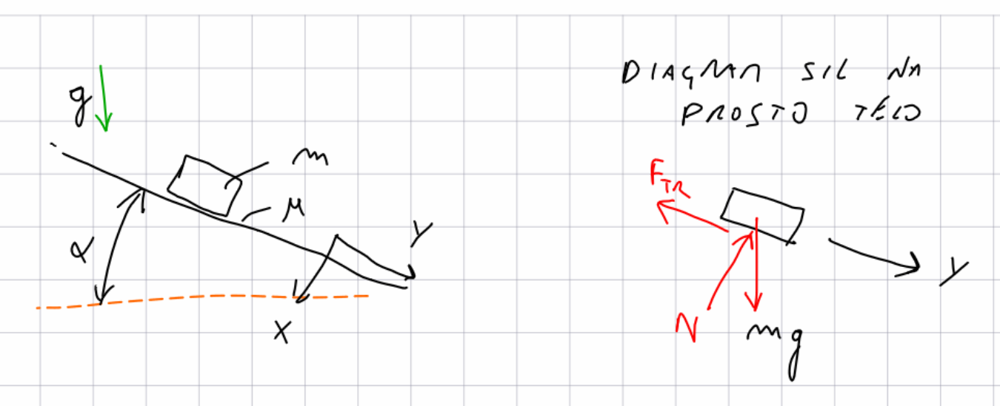

Numerično reševanje diferencialnih enačb - začetni problem#
import numpy as np
from ipywidgets import interact
import matplotlib.pyplot as plt
%matplotlib inline
import sympy as sym
sym.init_printing()
Uvod#
Zapis (ene) diferencialne enačbe#
Predpostavimo, da je mogoče diferencialno enačbo prvega reda zapisati v eksplicitni obliki:
kjer je \(f(t, y)\) podana funkcija in velja \(y'=dy/dx\).
Dodatno je podan začetni pogoj:
Cilj reševanja diferencialne enačbe je izračunati funkcijo \(y(t)\), ki reši zgoraj definiran začetni problem. Ob določenih pogojih funkcije \(f(t, y)\) ima začetni problem enolično rešitev na intevalu, ki vsebuje \(t_0\).
Pri numeričnem reševanju vedno računamo tabelo funkcije \(y(t_i)\), ki reši dan začetni problem. Pri tem so vozlišča \(t_i\) običajno ekvidistantna:
in \(h\) imenujemo (časovni) korak (integracije).
Tukaj si bomo pogledali nekatere numerične metode za reševanje diferencialnih enačb pri začetnem pogoju.
Eulerjeva metoda#
Eksplicitna Eulerjeva metoda temelji na razvoju funkcije \(y\) v Taylorjevo vrsto:
Naredimo napako metode \(\mathcal{O}(h^2)\), ker zanemarimo odvode drugega in višjih redov; sedaj lahko ob znani vrednosti \(y(t)\) in odvodu \(y'(t)=f(t,y)\) ocenimo vrednosti pri naslednjem časovnem koraku \(t+h\). Ko imamo enkrat znane vrednosti pri \(t+h\), ponovimo postopek!
Koraki Eulerjeve metode:
Postavimo \(i=0\), \(t_0\), \(y_0=y(t_0)\).
Izračun vrednosti funkcije pri \(t_{i+1}=t_i+h\): \(y_{i+1}= y_i + f(t_i, y_i)\,h.\)
\(i=i+1\) in nadaljevanje v koraku 2.
Diferencialno enačbo rešujemo na intervalu \([t_0,t_n]\) in velja \(h=(t_n-t_0)/n\). \(n\) je število integracijskih korakov (kolikokrat izvedemo korak 2 v zgornjem algoritmu).
Numerična rešitev začetnega problema:
pri vrednostih neodvisne spremenljivke:
from IPython.display import YouTubeVideo
YouTubeVideo('cfZ8v0b-R8o', width=800, height=300)
Napaka Eulerjeve metode#
Napaka Eulerjeve metode na vsakem koraku je reda \(\mathcal{O}(h^2)\).
Ker na intervalu od \(t_0\) do \(t_n\) tako napako naredimo \(n\)-krat, je kumulativna napaka \(n\,\mathcal{O}(h^2)=\frac{t_n-t_0}{h}\,\mathcal{O}(h^2)=\mathcal{O}(h)\).
Lokalno je napaka drugega reda, globalno pa je napaka prvega reda in ker je Eulerjeva metoda tako nenatančna jo redko uporabljamo v praksi!
Ocena napake#
Točna rešitev \(y(t_n)\) pri velikosti koraka \(h\) je:
kjer je \(y_{n,h}\) numerični približek in \(E_h\) napaka metode. Ker je globalna napaka prvega reda, lahko napako zapišemo kot:
Podobno lahko za velikost koraka \(2h\) zapišemo:
kjer je \(y_{n,2h}\) numerični približek in \(E_{2h}\) napaka metode:
Ob predpostavki, da je konstanta \(k\) pri koraku \(h\) in koraku \(2h\) enaka, lahko določimo oceno napake pri boljšem približku \(E_h\). Očitno velja:
nato določimo oceno napake:
Komentar na implicitno Eulerjevo metodo#
Pri eksplicitni Eulerjevi metodi računamo rešitev pri \(t_{i+1}\) iz izračunane vrednosti pri \(t_i\).
V kolikor bi nastopala neznana vrednost rešitve pri \(t_{i+1}\), to je \(y_{i+1}\), tudi na desni strani, bi govorili o implicitni Eulerjevi metodi (ali povratni Eulerjevi metodi):
Ker se iskana vrednost \(y_{i+1}\) nahaja na obeh straneh enačbe, moramo za določitev \(y_{i+1}\) rešiti (nelinearno) enačbo. Prednost implicitne Eulerjeve metode je, da je bolj stabilna (npr. v primeru togih sistemov, ki jih bomo spoznali pozneje) kakor eksplicitna oblika, vendar pa je numerično bolj zahtevna (zaradi računanja rešitve enačbe).
Numerična implementacija#
Najprej uvozimo potrebne knjižnice:
import numpy as np
import matplotlib.pylab as plt
%matplotlib inline
Nato definirajmo Eulerjevo metodo:
def euler(f, t, y0, *args, **kwargs):
"""
Eulerjeva metoda za reševanje sistema diferencialnih enačb: y' = f(t, y)
:param f: funkcija, ki vrne prvi odvod - f(t, y)
:param t: časovni vektor kjer računamo rešitev
:param y0: začetna vrednosti
:param args: dodatni argumenti funkcije f (brezimenski)
:param kwargs: dodatni argumenti funkcije f (poimenovani)
:return y: vrne np.array ``y`` vrednosti funkcije.
"""
y = np.zeros_like(t)
y[0] = y0
h = t[1]-t[0]
for i in range(len(t)-1):
y[i+1] = y[i] + f(t[i], y[i], *args, **kwargs) * h
return y
Pripravimo funkcijo za oceno napake (v numeričnem smislu bi bilo bolje oceno napake vključiti v funkcijo euler, vendar jo zaradi jasnosti predstavimo ločeno):
def euler_napaka(f, t, y0, *args, **kwargs):
""" Ocena napake Eulerjeve metode; argumenti so isti kakor za funkcijo `euler`
"""
n = len(t)
if n < 5:
raise Exception('Vozlišč mora biti vsaj 5.')
if n%2==0: # sodo vozlišč; odstrani eno točko in spremeni na liho (da je sodo odsekov)
n = n - 1
y_h = euler(f, t[:n], y0, *args, **kwargs)
y_2h = euler(f, t[:n:2], y0, *args, **kwargs)
E_h = y_h[-1] - y_2h[-1]
return E_h
Numerični zgled#
Kot primer rešimo diferencialno enačbo, ki opisuje padanje telesa, ki je izpostavljeno sili teže in zračnemu uporu:

Glede na II. Newtonov zakon, lahko zapišemo diferencialno enačbo:
kjer je \(m\) masa, \(g\) gravitacijski pospešek, \(c\) koeficient zračnega upora in \(v\) hitrost. Diferencialno enačbo bi hoteli rešiti glede na začetni pogoj:
Funkcija desne strani / prvega odvoda \(f(t,y)\) je:
in začetni pogoj:
Definirajmo funkcijo desnih strani:
def f_zračni_upor(t, y, g=9.81, m=1., c=0.5):
return g-c*y/m
Definirajmo začetni pogoj in časovni vektor, kjer nas zanima rezultat:
v0 = 0
t = np.linspace(0, 10, 11)
t
array([ 0., 1., 2., 3., 4., 5., 6., 7., 8., 9., 10.])
Kličemo funkcijo euler za izračun vrednosti \(y\) (hitrost \(v\)):
y = euler(f_zračni_upor, t, y0=v0)
y
array([ 0. , 9.81 , 14.715 , 17.1675 , 18.39375 ,
19.006875 , 19.3134375 , 19.46671875, 19.54335938, 19.58167969,
19.60083984])
Prikažemo rezultat:
plt.plot(t, y)
plt.title('Hitrost mase v odvisnosti od časa')
plt.xlabel('Čas $t$ [s]')
plt.ylabel('Hitrost $v$ [m/s]')
plt.show()
Preverimo sedaj vpliv časovnega koraka:
for n in [11, 101, 1001]:
t = np.linspace(0, 10, n)
y = euler(f_zračni_upor, t, y0=v0, c=0.7)
plt.plot(t, y, label=f'Časovni korak: {t[1]:1.0e}')
plt.title('Hitrost mase v odvisnosti od časa')
plt.xlabel('Čas $t$ [s]')
plt.ylabel('Hitrost $v$ [m/s]')
plt.legend()
plt.show()
Opazimo, da se numerična napaka pri spremembi koraka iz 1 na 0,1 bistveno zmanjša!
Ocenimo še napako pri 100 in 1000 odsekih:
n=101
t = np.linspace(0, 10, n)
euler_napaka(f_zračni_upor, t, y0=v0)
n=1001
t = np.linspace(0, 10, n)
euler_napaka(f_zračni_upor, t, y0=v0)
Ko smo korak zmanjšali na desetino, se je proporcionalno zmanjšala tudi napaka (prvi red napake).
Poglejmo še primer, ko je zračni upor c argument funkcije euler in je prek **kwargs posredovan v funkcijo f_zračni_upor():
for c in np.linspace(0, 1, 5):
t = np.linspace(0, 5, 1001)
y = euler(f_zračni_upor, t, y0=v0, c=c)
plt.plot(t, y, label=f'$c={c}$')
plt.title('Hitrost mase v odvisnosti od časa pri različnem koef. zračnega upora')
plt.xlabel('Čas $t$ [s]')
plt.ylabel('Hitrost $v$ [m/s]')
plt.legend()
plt.show()
Metoda Runge-Kutta drugega reda#
Eulerjeva metoda je prvega reda (prvega reda je namreč globalna napaka \(\mathcal{O}(h)\)). Če bi želeli izpeljati metodo drugega reda napake, bi si morali pomagati z razvojem \(y(t+h)\) v Taylorjevo vrsto, kjer bomo zanemarili tretji in višje odvode:
Lokalna napaka metode bo tako tretjega reda, globalna pa drugega reda.
Uporabimo zamenjavi \(y'(t)=f(t,y)\) in \(y''(t)=f'(t,y)\):
Ker je desna stran \(f(t,y)\) odvisna od neodvisne \(t\) in odvisne spremenljivke \(y\), moramo uporabiti implicitno odvajanje:
Vstavimo v izraz za Taylorjevo vrsto:
Kot je razvidno iz zgornjega izraza, potrebujemo dodatne odvode. To predstavlja določeno težavo, ki se ji lahko izognemo na različne načine; v nadaljevanju si bomo pogledali pristop Runge-Kutta. Ker bomo zgornji izraz pozneje še potrebovali, smo ga tukaj poimenovali \(y(t+h)_{\textrm{Taylor}}\).
Ideja pristopa Runge-Kutta#
Zgornjo dilemo metoda Runge-Kutta (razvita leta 1901) rešuje z idejo, ki smo jo sicer že srečali pri Gaussovi integraciji: točnejšo rešitev poskuša najti z uteženo dodatno vrednostjo funkcije \(f\):
kjer so \(c_0\), \(c_1\), \(p\) in \(q\) neznane konstante (načeloma od 0 do vključno 1). Če bi v zgornjem izrazu uporabili \(c_1=0\), bi izpeljali metodo prvega reda; z dodatno funkcijsko vrednostjo (\(A\)) pa se bo izkazalo, da bomo izpeljali metodo drugega reda.
Iskanje neznanih konstant \(c_0\), \(c_1\), \(p\), \(q\) nadaljujemo z zapisom \(A\) v obliki Taylorjeve vrste prvega reda:
Vstavimo sedaj izpeljani \(B\) nazaj v izraz za \(y(t+h)_{\textrm{Runge-Kutta}}\):
Nadaljujemo z izpeljevanjem in enačbo preoblikujemo, da bo podobna zgoraj izpeljani s Taylorjevo vrsto \(y(t+h)_{\textrm{Taylor}}\):
Primerjajmo sedaj z zgoraj izpeljanim izrazom:
Ugotovimo, da za enakost mora veljati:
Imamo torej tri enačbe in štiri neznanke. Eno od konstant si tako lahko poljubno izberemo, ostale tri pa izračunamo. Če na primer izberemo \(c_0=0\), bi to imenovali spremenjena Eulerjeva metoda in bi ostali parametri bili: \(c_1=1\), \(p=q=1/2\). Izbira parametrov nima bistvenega vpliva na rešitev. Sicer pa velja omeniti, da tudi metodo Runge-Kutta drugega reda redko uporabljamo, saj obstajajo boljše metode.
Parametre \(c_0\), \(c_1\), \(p\) in \(q\) vstavimo v prvo enačbo tega poglavja. Ko je definiran začetni čas \(t_0\) in začetni pogoj \(y_0\), uporabimo metodo Runge-Kutta drugega reda:
Metoda Runge-Kutta četrtega reda#
Podobno kot smo izpeljali metodo Runge-Kutta drugea reda, se izpelje metodo Runge Kutta četrtega reda. Tudi pri metodi četrtega reda obstaja več različic in kot metoda Runge-Kutta četrtega reda razumemo naslednjo metodo:
kjer so:
Koraki metode Runge-Kutta četrtega reda so:
Določitev \(i=0\) in \(t_0\), \(y_0=y(t_0)\),
Izračun koeficintov: \(k_0\), \(k_1\), \(k_2\), \(k_3\),
Izračun vrednosti rešitve diferencialne enačbe pri \(t_{i+1}=t_i+h\): \(\quad y_{i+1}=y_i+\frac{1}{6}(k_0+2\,k_1+2\,k_2+k_3),\)
\(i=i+1\) in nadaljevanje v koraku 2.
Napaka metode Runge-Kutta četrtega reda#
Metodo Runge-Kutta četrtega reda imenujemo tako zato, ker ima lokalno napako petega reda \(\mathcal{O}(h^5)\), vendar pa to napako naredimo \(n\)-krat, zato je globalna napaka četrtega reda \(\mathcal{O}(h^4)\).
Ocena napake#
Točen rezultat \(y(t_n)\) pri velikosti koraka \(h\) je:
kjer je \(y_{n,h}\) numerični približek rešitve in \(E_h\) napaka metode. Ker je globalna napaka četrtega reda, lahko napako zapišemo tako:
Podobno lahko za velikost koraka \(2h\) zapišemo:
kjer je \(y_{n,2h}\) numerični približek rešitve in \(E_{2h}\) napaka metode:
Ob predpostavki, da je konstanta \(k\) pri koraku \(h\) in koraku \(2h\) enaka, lahko izračunamo oceno napake pri boljšem približku \(E_h\).
Najprej je res:
sledi:
in nato določimo oceno napake natančnejše rešitve:
Numerična implementacija#
def runge_kutta_4(f, t, y0, *args, **kwargs):
"""
Metoda Runge-Kutta 4. reda za reševanje diferencialne enačbe: y' = f(t, y)
:param f: funkcija, ki jo kličemo s parametroma t in y in vrne
vrednost prvega odvoda
:param t: ekvidistanten časovni vektor oz. neodvisna spremenljivka
:param y0: začetna vrednost
:param args: dodatni argumenti funkcije f (brezimenski)
:param kwargs: dodatni argumenti funkcije f (poimenovani)
:return y: funkcijske vrednosti.
"""
def RK4(f, t, y, *args, **kwargs):
k0 = h*f(t, y, *args, **kwargs)
k1 = h*f(t + h/2.0, y + k0/2.0, *args, **kwargs)
k2 = h*f(t + h/2.0, y + k1/2.0, *args, **kwargs)
k3 = h*f(t + h, y + k2, *args, **kwargs)
return (k0 + 2.0*k1 + 2.0*k2 + k3)/6.0
y = np.zeros_like(t)
y[0] = y0
h = t[1]-t[0]
for i, ti in enumerate(t[1:]):
y[i+1] = y[i] + RK4(f, ti, y[i], *args, **kwargs)
return y
Funkcija za oceno napake:
def runge_kutta_4_napaka(f, t, y0, *args, **kwargs):
""" Ocena napake metode Runge Kutta 4; argumenti isti kakor za `runge_kutta_4`
"""
n = len(t)
if n < 5:
raise Exception('Vozlišč mora biti vsaj 5.')
if n%2==0: # sodo vozlišč; odstrani eno točko in spremeni na liho (da je sodo odsekov)
n = n - 1
y_h = runge_kutta_4(f, t[:n], y0, *args, **kwargs)
y_2h = runge_kutta_4(f, t[:n:2], y0, *args, **kwargs)
E_h = (y_h[-1] - y_2h[-1])/15
return E_h
Numerični zgled#
Poglejmo sedaj primer izračuna hitrosti padajoče mase:
def f_zračni_upor(t, y, g=9.81, m=1., c=0.5):
return g-c*y/m
Podajmo začetni pogoj in časovni vektor, kjer nas zanima rezultat:
v0 = 0
t = np.linspace(0, 10, 11)
t
array([ 0., 1., 2., 3., 4., 5., 6., 7., 8., 9., 10.])
Za primerjavo izračunajmo rešitev s funkcijo euler ter runge_kutta_4:
y_euler = euler(f_zračni_upor, t, y0=v0, c=0.4)
y_rk4 = runge_kutta_4(f_zračni_upor, t, y0=v0, c=0.4)
Prikažemo rezultat:
plt.plot(t, y_euler, label='Euler')
plt.plot(t, y_rk4, label='RK4')
plt.title('Hitrost mase v odvisnosti od časa')
plt.xlabel('Čas $t$ [s]')
plt.ylabel('Hitrost $v$ [m/s]')
plt.legend()
plt.show()
Poglejmo še numerično napako:
n=101
t = np.linspace(0, 10, n)
runge_kutta_4_napaka(f_zračni_upor, t, y0=v0, c=0.4)

n=1001
t = np.linspace(0, 10, n)
runge_kutta_4_napaka(f_zračni_upor, t, y0=v0, c=0.4)
Pri zmanjšanju koraka na desetino, se je napaka zmanjšala za približno \(10^4\)-krat (kar ustreza pričakovanjem za metodo četrtega reda).
Sistem navadnih diferencialnih enačb#
Zgoraj smo si pogledali reševanje začetnega problema ene navadne diferencialne enačbe; sedaj bomo reševanje posplošili na začetni problem za sistem \(m\) navadnih diferencialnih enačb prvega reda.
Takšen sistem zapišemo:
kjer so podani dodatni (začetni) pogoji:
S \(t\) smo označili neodvisno spremenljivko (ni nujno, da je to vedno čas) in \(\mathbf{f}\) vektor desnih strani.
Računamo rešitev sistema \(m\) diferencialnih enačb \(\mathbf{y}'=\mathbf{f}(t, \mathbf{y})\) pri \(a=t_0, t_1,\dots,t_{n-1}=b\), to je \(m\) funkcijskih vrednosti na vsakem koraku \(y_k(t_i)\), \(k=0,1,\dots,m-1\) in \(i=0,1,\dots,n-1\). Lahko se dokaže, da lahko uporabimo vsako metodo, ki smo jo izpeljali za diferencialne enačbe prvega reda tudi za sistem navadnih diferencialnih enačb prvega reda, če zamenjamo skalarne veličine z ustreznimi vektorskimi.
Numerična implementacija#
Metodi Euler in Runge-Kutta četrtega reda potrebujeta zgolj malenkostne popravke (y0 je numerično polje, f vrne seznam vrednosti odvodov):
def euler_sistem(f, t, y0, *args, **kwargs):
"""
Eulerjeva metoda za reševanje sistema navadnih diferencialnih enačb prvega reda : y' = f(t, y)
:param f: funkcija, ki jo kličemo s parametroma t in y in vrne seznam
funkcij desnih strani
:param t: ekvidistantni (časovni) vektor neodvisne spremenljivke
:param y0: seznam začetnih vrednosti
:param args: dodatni argumenti funkcije f (brezimenski)
:param kwargs: dodatni argumenti funkcije f (poimenovani)
:return y: vrne np.array ``y`` funkcijskih vrednosti.
"""
y = np.zeros((t.shape[0], len(y0)))
y[0] = np.copy(y0)
h = t[1]-t[0]
for i, ti in enumerate(t[:-1]):
# tukaj je bistvo Eulerjeve metode
y[i+1] = y[i]+f(ti, y[i], *args, **kwargs)*h
return y
def runge_kutta_4_sistem(f, t, y0, *args, **kwargs):
"""
Metoda Runge-Kutta 4. reda za reševanje sistema navadnih diferencialnih enačb prvega reda: y' = f(t, y)
:param f: funkcija, ki jo kličemo s parametroma t in y in vrne seznam
funkcij desnih strani
:param t: ekvidistantni (časovni) vektor neodvisne spremenljivke
:param y0: seznam začetnih vrednosti
:param args: dodatni argumenti funkcije f (brezimenski)
:param kwargs: dodatni argumenti funkcije f (poimenovani)
:return y: vrne np.array ``y`` funkcijskih vrednosti.
"""
def RK4(g, t, y, *args, **kwargs):
k0 = h*f(t, y, *args, **kwargs)
k1 = h*f(t + h/2.0, y + k0/2.0, *args, **kwargs)
k2 = h*f(t + h/2.0, y + k1/2.0, *args, **kwargs)
k3 = h*f(t + h, y + k2, *args, **kwargs)
return (k0 + 2.0*k1 + 2.0*k2 + k3)/6.0
y = np.zeros((t.shape[0], len(y0)))
y[0] = np.copy(y0)
h = t[1]-t[0]
for i, ti in enumerate(t[1:]):
y[i+1] = y[i] + RK4(f, ti, y[i], *args, **kwargs)
return y
Numerični zgled#
Padanje mase nadgradimo v ravninsko gibanje; velikost sile upora zraka naj bo definirana kot:
Sila upora zraka deluje v nasprotno stran kot kaže vektor hitrosti.

Ob pomoči slike, definiramo silo v \(x\) smeri:
Podobno je sila v \(y\) smeri:
Glede na drugi Newtonov zakon zapišemo sistem dveh (vezanih) diferencialnih enačb prvega reda:
\(m\) je masa, \(g\) gravitacijski pospešek, \(c\) koeficient zračnega upora ter \(v_x\) in \(v_y\) hitrost v \(x\) oz \(y\) smeri. Diferencialno enačbo bi želeli rešiti glede na začetni pogoj:
Definirajmo seznam desnih strani:
def f_zračni_upor_sila(t, y, g=9.81, m=1., c=0.5):
vx, vy = y
return np.array([-c*vx*np.sqrt(vx**2+vy**2)/m, g-c*vy*np.sqrt(vx**2+vy**2)/m])
Definirajmo začetni pogoj in časovni vektor, kjer nas zanima rezultat:
y0 = np.array([5., 5.])
t = np.linspace(0, 5, 101)
t[:5]
array([0. , 0.05, 0.1 , 0.15, 0.2 ])
Za primerjavo izračunajmo rešitev s funkcijo runge_kutta_4 ter solve_ivp:
y_RK4 = runge_kutta_4_sistem(f_zračni_upor_sila, t=t, y0=y0)
y_ivp = solve_ivp(f_zračni_upor_sila, t_span=(t[0], t[-1]), y0=y0, t_eval=t)
Poglejmo rezultat:
y_ivp.y[:,:5]
array([[5. , 4.23209907, 3.63858619, 3.16619484, 2.78087608],
[5. , 4.68459713, 4.48359747, 4.35932897, 4.28742151]])
y_RK4[:5].T
array([[5. , 4.23211316, 3.6399137 , 3.16660748, 2.77780226],
[5. , 4.68462761, 4.48494405, 4.35999931, 4.28466858]])
Prikažemo rezultat:
plt.plot(t, y_ivp.y[0], label='$v_x$')
plt.plot(t, y_ivp.y[1], label='$v_y$')
plt.title('Hitrost mase (upor in sila) v odvisnosti od časa')
plt.xlabel('Čas $t$ [s]')
plt.ylabel('Hitrost $v$ [m/s]')
plt.legend()
plt.show()
Preoblikovanje diferencialne enačbe višjega reda v sistem diferencialnih enačb prvega reda#
Pogledali si bomo, kako navadno diferencialno enačbo poljubnega reda \(n\):
pri začetnih pogojih:
preoblikujemo v sistem diferencialnih enačb prvega reda.
Najprej namesto odvodov vpeljemo nove spremenljivke:
Diferencialna enačba \(n\)-tega reda zapisana z novimi spremenljivkami je:
Nove funkcije odvajamo po neodvisni spremenljivki:
in
Dobili smo sistem navadnih diferencialnih enačb prvega reda:
pri začetenih pogojih:
Numerični zgled#
Vrnemo se k padajoči masi:
Vendar tokrat drugi Newtonov zakon zapišimo glede na pomik (diferencialna enačba drugega reda):
\(m\) je masa, \(g\) gravitacijski pospešek, \(c\) koeficient zračnega upora ter \(x''\) in \(y''\) pospešek v izbranem koordinatnem sistemu. Začetni pogoji:
Imamo sistem dveh diferencialnih enačb drugega reda. Z uvedbo novih spremenljivk \(y_i\):
Pripravimo sistem diferencialnih enačb prvega reda:
Definirajmo Pythonovo funkcijo desnih strani / prvih odvodov:
def f_zračni_upor_vezana(t, y, g=9.81, m=1., c=0.5):
x, vx, y, vy = y
return np.array([vx, -c*vx*np.sqrt(vx**2+vy**2)/m, vy, g-c*vy*np.sqrt(vx**2+vy**2)/m])
Definirajmo začetni pogoj in časovni vektor, kjer nas zanima rezultat:
y0 = np.array([0., 5., 0., 5.])
t = np.linspace(0, 5, 101)
t[:5]
array([0. , 0.05, 0.1 , 0.15, 0.2 ])
Izračunamo rešitev:
y_ivp = solve_ivp(f_zračni_upor_vezana, t_span=(t[0], t[-1]), y0=y0, t_eval=t)
Poglejmo rezultat (\([x, x', y, y']\)):
y_ivp.y[:,:5]
array([[0. , 0.22992477, 0.42611996, 0.59587483, 0.74424286],
[5. , 4.23183658, 3.64002431, 3.16703014, 2.77775353],
[0. , 0.24153615, 0.47038377, 0.69124852, 0.9072755 ],
[5. , 4.68435696, 4.48497294, 4.36034218, 4.28444004]])
Prikažemo rezultate; najprej hitrost, nato lego (\(y\) koordinata je pozitivna navzdol)!
plt.plot(t, y_ivp.y[1], label='$v_x$')
plt.plot(t, y_ivp.y[3], label='$v_y$')
plt.title('Hitrost mase v odvisnosti od časa')
plt.xlabel('Čas $t$ [s]')
plt.ylabel('Hitrost [m/s]')
plt.legend()
plt.show()
plt.scatter(y_ivp.y[0], y_ivp.y[2], marker='.')
plt.xlabel('$x$ [m]')
plt.ylabel('$y$ [m]')
plt.title('Lega mase')
plt.show()
Stabilnost reševanja diferencialnih enačb*#
Numerično reševane diferencialnih enačb je izpostavljeno napaki metode in zaokrožitveni napaki. Te napake so pri različnih numeričnih metodah različne.
Reševanje diferencialne enačbe je stabilno, če majhna sprememba začetnega pogoja vodi v majhno spremembo izračunane rešitve; sicer govorimo o nestabilnosti reševanja.
Stabilnost je odvisna od diferencialne enačbe, od uporabljene numerične metode in od koraka integracije \(h\).
Primer preprostega nihala#
Poglejmo si najprej primer reševanja diferencialne enačbe preprostega nihala.

Slika (vir: Slavič, Dinamika, mehanska nihanja in mehanika tekočin, 2017) prikazuje dinamski sistem (masa \(m\), togost \(k\)), katerega diferencialna enačba je
Tako diferencialno enačbo preoblikujemo v standardno obliko lastnega nihanja:
kjer je lastna krožna frekvenca:
in pričakujemo odziv oblike:
Če so začetni pogoji:
je rešitev začetnega problema:
Numerični zgled#
Najprej definirajmo vektor začetnih pogojev in funkcijo desnih strani / prvih odvodov (diferencialno enačbo drugega reda pretvorimo v sistem diferencialnih enačb prvega reda \(\mathbf{y}'=\mathbf{f}(t, \mathbf{y})\)), kjer velja \(y_0=x, y_1=x'\):
def f_nihalo(t, y, omega0=2*np.pi):
"""
Funkcija desnih strani za nihalo z eno prostostno stopnjo
:param t: čas
:param y: seznam začetnih vrednosti
:param omega: lastna krožna frekvenca
:return y': seznam vrednosti odvodov
"""
return np.array([y[1], -omega0**2*y[0]])
Definirajmo podatke in analitično rešitev:
x0 = 1.
omega0 = 2*np.pi
x_zacetni_pogoji = np.array([x0, 0.])
t1 = 4.
cas = np.linspace(0, t1, 500)
pomik = x0*np.cos(omega0*cas) # analitična rešitev
hitrost = -x0*omega0*np.sin(omega0*cas) # analitična rešitev
Rešitev s pomočjo metod Euler in Runge-Kutta četrtega reda:
t_Eu = np.linspace(0, t1, 101)
t_RK4 = t_Eu
dt = t_Eu[1]
x_Eu = euler_sistem(f_nihalo, t_Eu, x_zacetni_pogoji)
x_RK4 = solve_ivp(f_nihalo, t_span=(t_RK4[0], t_RK4[-1]), y0=x_zacetni_pogoji, t_eval=t_RK4).y
Prikažimo rezultate:
plt.plot(cas, pomik, label='Analitična rešitev')
plt.plot(t_Eu, x_Eu[:,0], '.', label='Euler')
plt.plot(t_RK4, x_RK4[0], '.', label='Runge-Kutta 4')
plt.legend()
plt.title('Stabilnost različnih metod')
plt.ylabel('Pomik [m]')
plt.xlabel('Čas [s]')
plt.show()
Opazimo, da je Eulerjeva metoda nestabilna in če bi povečali korak, bi postala nestabilna tudi metoda Runge-Kutta četrtega reda.
Zakaj je Eulerjeva metoda tako nestabilna?#
x_Eu[:10,0]
array([ 1. , 1. , 0.93683453, 0.8105036 , 0.62499707,
0.3882947 , 0.1121141 , -0.18859332, -0.49638247, -0.79225904])
Spomnimo se Eulerjeve metode:
ki nam pove, da pomik \(x(t+h)\) določimo glede na lego \(x(t)\) in hitrost \(x'(t)\). Začetni pogoji izhajajo iz skrajnega odmika \(x(t=0)=1\) in takrat je hitrost \(x'(t=0)=0\), kar pomeni, da bo \(x(t+h)=1\). Že v prvem koraku torej naredimo razmeroma veliko napako. Vendar zakaj potem začne vrednost alternirajoče naraščati?
Spomnimo se, da je analitična rešitev \(x(t)=x_0\,\cos(\omega_0\,t)\) in je torej \(x'(t)=-\omega_0\,x_0\,\sin(\omega_0\,t)\).
Vstavimo pripravljena izraza v Eulerjevo metodo in uredimo:
Predpostavimo, da gledamo stanje ob takem času \(t=\pi/(2\omega_0)\), ko velja \(\cos(\omega_0\,t)=0\) in \(\sin(\omega_0\,t)=1\):
V kolikor bo absolutna vrednost izraza \(A\) večja kot 1, bo pri času \(t+h\) vrednost večja kot v predhodnem koraku in v sledečem verjetno spet. Sledi, da lahko pride do nestabilnosti. Da se je izognemo, mora veljati:
Opomba: v nekaterih knjigah boste videli tudi vrednost \(h<2/\omega_0\); enoliče meje za vse diferencialne enačbe ni mogoče definirati; v splošnem pa velja, da je korak definiran relativno glede na najkrajšo periodo \(T\) v diferencialni enačbi (npr.: \(h<2/\omega_0\) je v bistvu enako \(h<2/(2\pi/T)\) oziroma \(h<T/\pi\)). Perioda \(T\) je definirana glede na najvišjo lastno frekvenco sistema \(T=1/f_{\textrm{max}}\), ki jo izračunamo iz lastne vrednosti sistema.
Nekaj vprašanj za razmislek!#
Na sliki (vir: Numerical Methods in Engineering With Python 3, 3rd Ed, Jaan Kiusalaas) je prikazan izstrelek mase \(m\), ki ga izstrelimo s hitrosjo \(v_0\) pod kotom \(\alpha\). Če je sila upora zraka: \(F=c\,v^{3/2}\), potem sta gibalni enačbi:
Opomba: \(v=\sqrt{\dot x^2+\dot y^2}.\) Ustrezne parametre si izmislite.

Sistem dveh diferencialnih enačb drugega reda zapišite v sistem diferencialnih enačb prvega reda.
2. Določite vektor začetnih pogojev, ki smo ga zgoraj označili z \(\mathbf{y}\).
3. Določite funkcijo desnih strani, c naj bo parameter.
4. Definirajte začetne pogoje in rešite nalogo s poljubnimi podatki.
5. Prikažite \((x, y)\) lego masne točke, spreminjajte koeficient upora \(c\).
6. Prikažite hitrost v odvisnosti od časa. Določite minimum hitrosti in čas, pri katerem nastane.
Primer Van der Polovega nihala#
Namen tega primera je pokazati, kako lahko izbira integratorja vpliva na hitrost reševanja problema! Van der Polovo nihalo je opisano tukaj.
Definirajmo seznam odvodov:
def f_van_der_pol(t, y, mu=1000):
"""
Funkcija desnih strani za Van der Pol nihalo
:param t: čas
:param y: seznam začetnih vrednosti
:param mu: parameter dušenja in nelinearnosti
:return y': seznam vrednosti odvodov
"""
return np.array([y[1], mu*(1-y[0]**2)*y[1]-y[0]])
x_zacetni_pogoji = np.array([1.5, 0.])
dt = 0.1
t1 = 3000
Rešitev po metodi RK45 (gre za eksplicitno shemo, ki ni primerna za toge sisteme diferencialnih enačb; reševanje je zelo počasno, zato rešitev računamo samo do t1/100):
vp_RK45 = solve_ivp(f_van_der_pol, t_span=(0., t1/100), y0=x_zacetni_pogoji, method='RK45')
Implicitna shema BDF (angl. Backward Differentiation Formulas) se tukaj izkaže kot bistveno bolj primerna. Zaradi stabilnosti, so koraki lahko bistveno večji in zato je reševanje bistveno hitrejše:
vp_BDF = solve_ivp(f_van_der_pol, t_span=(0., t1), y0=x_zacetni_pogoji, method='BDF')
plt.plot(vp_BDF.t, vp_BDF.y[0], 'C1.', label='Pomik - BDF [m]')
plt.plot(vp_RK45.t, vp_RK45.y[0], 'C0.', label='Pomik - RK4 [m]')
plt.xlabel('Čas [s]')
plt.legend(loc=(1.01, 0));
Simbolno reševanje diferencialne enačbe drugega reda#
Pogledali si bomo primer, prikazan na sliki, kjer je masa \(m\) na klancu naklona \(\alpha\). Koeficient trenja je \(\mu\), težnostni pospešek pa \(g\). Začetna hitrost je \(\dot y(0\,\textrm{s})=v_0\), pomik \(y(0\,\textrm{s})=0\,\textrm{m}\).  Gibalna enačba (samo za smer \(y\)) je definirana glede na II. Newtonov zakon (glejte diagram sil na prosto telo).
Izpeljava gibalne enačbe#
y = sym.Function('y')
m, mu, g, alpha, t, v0 = sym.symbols('m, mu, g, alpha, t, v0')
eq = sym.Eq(m*y(t).diff(t,2), m*g*sym.sin(alpha)-m*g*sym.cos(alpha)*mu)
eq
Rešitev enačbe je:
dsol = sym.dsolve(eq, y(t))
dsol

Da določimo \(C_1\) in \(C_2\), vstavimo \(t=0\,\textrm{s}\):
dsol.args[1].subs(t, 0)

Nato odvajamo po času in ponovno vstavimo \(t=0\,\textrm{s}\):
dsol.args[1].diff(t).subs(t, 0)
Glede na začetne pogoje smo torej določili konstante:
zacetni_pogoji = {'C1': 0, 'C2': v0}
Sledi rešitev:
resitev = dsol.args[1].subs(zacetni_pogoji)
resitev

Pripravimo si funkciji za numerični klic:
podatki = {mu: 0.3, alpha: 15*np.pi/180, v0: 1., g: 9.81} #tukaj uporabimo np.pi, da imamo numerično vrednost
pomik = sym.lambdify(t, resitev.subs(podatki), 'numpy')
hitrost = sym.lambdify(t, resitev.diff(t).subs(podatki), 'numpy')
print('Pomik pri 0s: {:g}m'.format(pomik(0)))
print('Hitrost pri 0s: {:g}m/s'.format(hitrost(0)))
Pomik pri 0s: 0m
Hitrost pri 0s: 1m/s
Pripravimo prikaz:
cas = np.linspace(0, 4, 100)
cas2 = np.linspace(0, 4, 5)
def slika():
plt.plot(cas, pomik(cas), 'C0', label='Pomik [m]')
plt.plot(cas, hitrost(cas), 'C1', label='Hitrost [m/s]')
plt.plot(cas2, pomik(cas2), 'C0o', label='Pomik - velik korak[m]')
plt.plot(cas2, hitrost(cas2), 'C1o', label='Hitrost - velik korak [m/s]')
plt.xlabel('Čas [s]')
plt.ylabel('Pomik [m] / Hitrost [m/s]')
plt.legend(loc=(1.01, 0));
plt.show()
slika()
Simbolno preoblikovanje diferencialne enačbe v sistem diferencialnih enačb prvega reda#
Spomnimo se izvorne diferencialne enačbe:
eq
Definirajmo nove spremenljivke in pripravimo funkcijo \(f\):
y0 = sym.Function('y0')
y1 = sym.Function('y1')
f = sym.simplify(eq.args[1]/m)
f

Povežimo sedaj nove spremenljivke.
\(d y_0/dt\) naj bo enako \(y_1\):
eq1 = sym.Eq(y0(t).diff(t), y1(t))
eq1

Odvod \(d y_1/dt\) (v bistvu je to \(y''\)) naj bo enak funkciji \(f\):
eq2 = sym.Eq(y1(t).diff(t), f)
eq2

Zgornje izraze zapišemo v vektorski obliki: $\(\mathbf{y}'=\mathbf{f}(t, \mathbf{y}).\)$
y_odvod = [y0(t).diff(t), y1(t).diff(t)]
y_odvod

f_vec = [y1(t), f]
f_vec

Spomnimo se sedaj f_vec:
f_vec
Če rešujemo numerično, potem funkcijo \(\mathbf{f}(t, \mathbf{y})\) zapišemo:
pospesek = float((eq.args[1]/m).simplify().subs(podatki))
pospesek #raziščite zakaj smo tukaj tako definirali! namig: type(pospesek)

def F_klada(t, y):
return np.array([y[1], pospesek],dtype=float)
Preverimo funkcijo pri začetnem času \(t=0\,\)s in pri začetnih pogojih \([y_0, y_1]=[0, v_0]\):
y_zacetni_pogoji = np.array([0, podatki[v0]])
y_zacetni_pogoji
array([0., 1.])
F_klada(0., y_zacetni_pogoji)
array([ 1. , -0.30370487])
Uporabimo sedaj Eulerjevo metodo:
#%%timeit
x_Eu = np.linspace(0, 4, 5)
y_Eu = euler_sistem(F_klada, x_Eu, np.array([0, 1.]))
y_Eu
array([[ 0. , 1. ],
[ 1. , 0.69629513],
[ 1.69629513, 0.39259025],
[ 2.08888538, 0.08888538],
[ 2.17777075, -0.2148195 ]])
Prikažemo in primerjamo z analitično rešitvijo:
def narisi_euler(n=5):
x_Eu = np.linspace(0, 4, n)
y_Eu = euler_sistem(F_klada, x_Eu, np.array([0, 1.]))
plt.title('Eulerjeva metoda s korakom $h={:g}$'.format(x_Eu[1]-x_Eu[0]))
plt.plot(cas, pomik(cas), 'C0', label='Pomik - analitično [m]')
plt.plot(cas, hitrost(cas), 'C1', label='Hitrost - analitično [m/s]')
plt.plot(x_Eu, y_Eu[:, 0], 'C0.', label='Pomik - Euler [m]')
plt.plot(x_Eu, y_Eu[:, 1], 'C1.', label='Hitrost - Euler [m/s]')
plt.xlabel('Čas [s]')
plt.ylabel('Pomik [m] / Hitrost [m/s]')
plt.ylim(-0.5, 2.5)
plt.legend(loc=(1.01, 0))
plt.show();
interact(narisi_euler, n=(3, 10, 1));